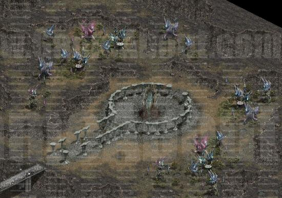
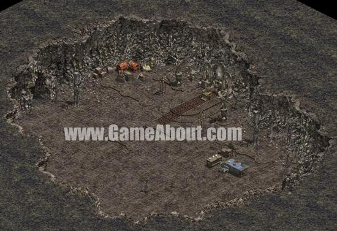
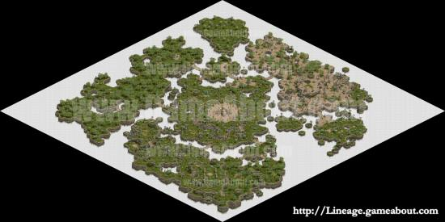

|
2003年6月24日
韓國測試伺服器6月24日檔案內容
今天韓國測試伺服器更新了地圖檔、圖示檔及圖素檔，加入了以下東西：
圖示：
地圖（來自Lineage
Gameabout）：
黑暗精靈村莊：

黑暗精靈城堡：

天空之島：

黑暗精靈速度表
以下資料為韓國測試伺服器的數據，部分數據是未經調整的，因此是絕對有可能會更改的。
|
|
每分鐘可以完成動作的次數（單位是
"動作/分鐘"） |
| 職業 |
行走
速度 |
空手
攻擊 |
劍系
攻擊 |
十字弓
攻擊 |
雙劍
攻擊 |
爪系
攻擊 |
匕首
攻擊 |
飛標
攻擊 |
有向
魔法 |
無向
魔法 |
硬直時間
（秒） |
| 男黑暗精靈 |
90.00 |
48.00 |
55.38 |
35.12 |
33.48 |
48.00 |
49.65 |
48.00 |
40.00 |
42.35 |
0.58 |
| 女黑暗精靈 |
90.00 |
53.33 |
55.38 |
35.12 |
36.00 |
48.00 |
55.38 |
55.38 |
36.92 |
25.71 |
0.58 |
PS:：男黑暗精靈使用十字弓時的硬值時間為0.50秒，另外使用雙劍攻擊時是會顯示兩次中招動作。 |